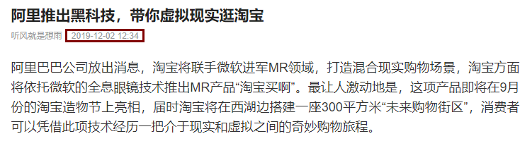

SEE作业：
对于任何一款产品来说，弄清产品需求是必要的，对于需求不确定的产品，首先要做的就是得到确切的用户需求；
对于一款创新产品来说，要优先考虑可行性，其次考虑创新性，目前行业或领域的可变革性是关键；
当行业的的可变革性较低时，一款产品主要把握的还是可行性，这样可以做出中规中矩的产品，只有当行业对变革有强烈需求时，创新性才会大放异彩；
互联网行业就是最好的例子，因为相对于其他行业来说，该领域的技术变革与发展是最快速的；
在过去的互联网黄金十年中，大量的企业涌现出来，各类技术层出不穷。但总体的发展，主要还是依赖社会环境的可变革性，而非某一种技术的出现；
以BAT为例，在21世纪后个人计算机在国内逐渐普及，用户才有了中文互联网搜索以及即时通讯的大量需求，所以百度腾讯逐步发展了起来。
相对来说，阿里在人们印象中普及的晚一点，主要依托于11年左右智能手机的出现以及移动互联网的发展。
就过去的三巨头而言，他们的发展主要依托的还是互联网和社会的同步变革，技术上其实并没有太大的创新。
恰恰相反，从15年开始，相比之前的互联网时期，其实出现了更多的新技术：
而就结果而言，过去的几年因为技术起家的企业寥寥无几，每种技术都有种昙花一现的感觉。
分析其中的原因，大部分都与市场有关，互联网之所以发展迅猛，主要是大量的资本涌入。
安卓端技术火热的时候，出现了很多应用，如许多不错的单机游戏等，但后来都转向了网游、直播、短视频这些更技术一般的应用；
发展由技术转向了用户群体，主要还是资本需要通过操控市场发展方向来实现自己的盈利。
虚拟现实技术、共享经济可以一起分析，当年虚拟现实技术在国内刚出现的时候，网上说淘宝要开VR网店，让用户可以进行VR网店的体验。
刚才网上又搜了一下：

黑科技这个词刚出现的时候感觉还是比较贴切，但现在黑科技已经被各种资本自夸黑的不行了。
不得不说一些技术概念的提出可以俘获资本的投入，但往往会对大众造成一种误导。
阿里如果要像淘宝一样开设VR网店，前提得是VR技术像智能手机一样普及，这是这项创新变革的社会前提。
那么国内有哪些高校在进行这项技术的研究呢？斯坦福是有虚拟现实技术实验室的，但国内高校目前还很少听说有，国内大众目前对虚拟现实的了解仅仅还只停留在16年的感性宣传阶段，因为盈利性和可普及性较低，所以很少有资本投入，这是目前国内现状。
共享经济恰恰摆脱了这些问题，看上去可盈利，又很容易普及，于是就有了17年的投资热潮。
对于这种不切实际的盲目投资，大的资本团体不见得会亏，亏的都是散户。
共享经济的出现显然不符合当时社会水平，一切的操作更像是资本炒作，一场资本狂欢假象下的资本骗局。
通过VR和共享经济分析，可以得到创新产品的出现，关键在于当前社会水平能够给与市场足够的可变革性，否则就会变成对市场的运作。
当社会对某一行业变革有强烈需求时，好的创新产品是很容易成长起来的。
假如现在每个人能像用淘宝一样使用VR技术，商家可以像运作淘宝网店一样运作VR网店，阿里开VR淘宝将是再简单不过的事情。
假如社会真的可以善待共享经济，整个市场才会得到健康的发展。
人工智能、5G、区块链这些名词，在概念上已经过于名副其实。
过于名副其实会给人以名不副实的感觉，这些技术的发展与终将普及不可置否，但这类底层层次的技术更适合低调逐步过渡。
就像2G换3G，3G换4G，没什么好说的。时代终是要发展的，又何必大惊小怪。
所以，如何对需求不确定的创新产品进行分析和设计？
做产品，需求不确定已经是个很玄的前提了，而且还是创新产品。
创新产品可以从两个角度考虑这个问题，一是产业变革，二是产品盈利。
不同角度会是不一样的方式，前者是从社会发展方面考虑，类似BAT这一类产品，后者是从投资盈利考虑，比较像拼多多。
以未来图书为例|
电子书不会成为承载知识传播的主流。
至少在当前阶段，还没有看到什么技术足以全面替代纸质书籍。
书籍和报纸不一样，报纸可以被互联网逐渐成为历史，是因为它与书籍承载信息的价值形态不一样。
优秀的报纸价值在于时事新闻的优秀，它的价值在于当时的时间点，符合“阅后即焚”的特点；
而优秀的书籍恰恰相反，它是价值在于历史性的沉淀，随人生的阶段而产生不同的感悟，符合“书读百遍”的特点；
以现在出现的各类电子书、博客、公众号、网课等为例，用户大多是入门级，起到的是概念引领作用，真正对技术、知识有了解的人，会有更好的渠道去获取。
好比当初考研408的时候，大多数有基础的都是自己看书学的，基本没人会看网课。一是因为没必要，二是因为能真正把知识通过信息化传播做好的人很少。
什么时候电子书能成为主流？
当学校采用电子书教学，当社会上流人士和知识分子也不再阅读纸质书的时候。
这些似乎没有什么必要，为什么要放弃体验良好的书籍，采用伤眼的电子屏幕呢，更关键的是，这并不见得会有更好的盈利，市场不允许。
电子书也等不到产业变革的那一天，产业变革会是很漫长的过程，彼时全息技术可能已经发展成型，那会是更好更理想的承载媒介，会是新的替代“竹简”的“纸”。
充分利用社会现有资源，创造新的产业模式。
因为目标是做出可以盈利的产品，所以就不要过于纠结技术，互联网各大厂的起家大部分都是模式匹配了社会需求，所以发展成了顺水推舟的事。
就近阶段的未来书籍而言，可以充分参照电商的两种发展：
后者一般是在某一领域已经有成品后，充分利用一些洪泛性宣传，凭借信息不对称或者贪便宜心理使用户感觉自己赚了，收获第一批韭菜。然后用业绩去拉取第一批投资，将投资打广告和鼓励用户分享给其他人，用于获取第二代韭菜，经过几轮融资过后用户群体会获得爆发式增长被认定为优质资产。凭借资金的滚入，可以获得庞大的现金流套牢投资者。但由于野蛮生长，获得的韭菜品质一般都不太好，通过大量福利的补贴才能留住用户，慢慢会逐渐出现亏损的现象。但投资者不会承认自己要亏了，会依然为自己的投资叫好，鼓励更多投资人进来共同承担风险。如果企业这时候能提升自己的产品和用户品质留住用户，就能在行业里存活下来，如果做不到，还只是凭借运营模式拉取投资活下去，就很容易出现崩盘。
但是这种模式，已经不算什么创新产品，更像是营销策略。
前者是比较符合未来图书的产品思考的，利用现有的简单技术，发掘新的模式。
这种情况需要考虑整个书籍的产业链。
电商领域淘宝选择的是提供平台，将店铺租给商家，其余的由商家自己完成。对淘宝自己而言，就只需要关心如何吸引商家和买家的问题，对整个产业链的涉及不会太多但却发展了电商产业链。在收获了大量的用户之后，将这些用户转为其他产品的用户，比如支付宝等。
京东选择了承包整个电商产业链，自营店除了产品的生产以外其他全都自己做了，九年亏损188亿后扭亏为盈撑了过来，就平台品质和对社会产业影响而言，是做的比较优秀的，真正的把用户投资花在了有意义的地方。只要未来不出现大的问题，京东应该能像超市在国内的普及一样发展下去。
书籍行业承包产业链的话，当当差不多已经这样做了，自营的书籍除了印刷基本都自己做了。
那么改变目前书籍的产业链，或者说进行一些改动是比较可行的做法。
首先，用户是比较有需求的，用户希望更方便更便宜的买到正版书籍，至于出版社或者作家，是希望能更大的盈利。
其次，目前的社会技术发展，满足对产业链进行改动的条件，书籍行业的电商就是个例子。
关于产业链，从商家发货，到买家接收，目前没有什么可改动的了，都是物流层面的问题。所以只能考虑产业链的上层，也就是印刷出版环节。
目前的模式是作家到出版社再到发行，作家到出版社是必要的，但是发行在目前的互联网环境下似乎可以做一些改动。
如果有一个具有足够公信力的平台，面向作家和读者，平台拥有作家的版权，以电子书或者纸质书形式出售给读者。
同时平台承担印刷的职能，根据买家的需求印刷相应的书籍售与用户。
将出版社排除在印刷书籍之外，只负责报批、编辑、审稿等原有职能。
改动的关键在于出版社不会放弃印刷书籍环节的盈利，所以平台需要将印刷的盈利补贴给出版社用于更好的审稿等业务。
这样既减少了出版社的业务，同时保留了出版社的盈利来源，在盈利不变的前提下把更少的事做的更好。
出版社盈利不变，平台的盈利从哪里来？
更优质的出版书籍，更高效的产业链供需平衡。
在这种模式下，剔除了原有产业链发行环节的冗余成本，出版社提供更好的审稿编辑等业务，平台提供优质的正版印刷和书籍供应。
解决了哪些问题？
平台可以站稳产业链的中间环节，作家、出版社、读者都需要通过平台来沟通。
当模式稳定下来以后，就可以削减给出版社的费用，不再补贴印刷盈利。
平台总体盈利 = 产业链优化带来的部分利润（剩余的利润用来降低书籍售价使读者获利） + 出版社的印刷利润
当正版书籍变得便宜且优质，盗版书就很难再卖出去了，这时候维护了作家的利益，如果考虑适量降低版权费用，可以进一步降低版权成本，相比于如今的大量盗版书、pdf等，作家的利润并不会降低，用户可以买到更便宜的书籍。
至于网课一类的视频资料，或者博客微信公众号的图文，也可以参照类似的产业链。
视频图文资料的作者把版权授予平台，平台负责审核和排版，将内容呈现给用户。
这样平台就完全承担了出版社的职能，信息化的出版社。
这样资料会变得更加优质，读者才愿意付费，作者可以更好的盈利，写出更好的内容。
平台获得用户流量后会有广告收入，读者也能拥有更好的获取资源的平台。
就目前的现状而言，大多数人是不愿意为互联网资源买单的，因为觉得不值。
只有使整个行业生产出优质的内容，用户才愿意买单，这是平台存在的意义。
不考虑长远重大科技变革的话，书籍出版行业的产业链本身环节都是不可或缺的，所以短期内产业的变革应该只能发生在各机构的职能变动上，通过一个优质平台来承载产业链的关键环节，进行高效的调度降低成本，是目前相对可行的方法。
与互联网相关的产业链未来变革，大多都会伴生出统一的公信平台。
或许统一书籍或网络优质资源看起来不切实际，不过淘宝、美团、滴滴当初也是那么不切实际；
所以是创新。